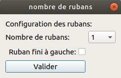

Pour entrer dans l'interface de création d'une machine de Turing vous devez cliquer sur le bouton "Créer un nouvelle machine" ou en cliquant sur le menu déroulant "Fichier". Une interface va s'ouvrir pour que vous choisissiez le nombres de rubans que vous utiliserez.
Pour charger une machine de Turing depuis votre gestionnaire vous devez cliquer sur le bouton "Charger une machine" ou en cliquant sur le menu déroulant "Fichier".
Les premières zones de textes servent à initialiser les rubans pour la simulation. Le nombre varie en fonction du nombre de rubans que vous avez entré juste avant.
La zone de texte devant "Règles" permet d'écrire une règle et de la rajouter à la liste de règles en appuyant sur le bouton "Ajouter". Les cases à cocher permettent d'identifier l'état initial (Etat à gauche de la règle) et l'état final (Etat à droite de la règle). Enfin, pour supprimer une règle, il vous faut sélectionner une règles dans la liste de règles et de cliquer sur le bouton "supp"